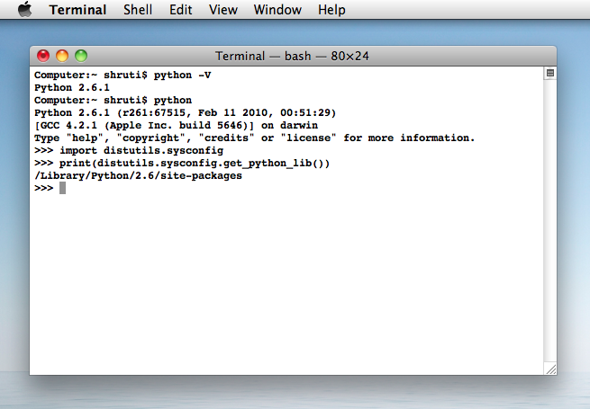

Installing Music21 with SVN, setuptools, and PIP¶
Installing Music21 with SVN¶
For developers and advanced users, anonymous SVN access is available from Google Code. Enter the following command line argument or SVN commands:
svn checkout http://music21.googlecode.com/svn/trunk/ music21-read-only
Downloading and Installing Music21 with setuptools or pip¶
The easiest way to download and install music21 is with one of the powerful automated Python package installers available. These tools can also be used to update an existing music21 installation to the most-recent version.
Automated Installation with setuptools¶
First, install setuptools:
http://pypi.python.org/pypi/setuptools
Second, install and/or update music21 with the following command-line argument:
$ sudo easy_install music21
Automated Installation with pip¶
First, install pip:
http://pypi.python.org/pypi/pip
Second, install and/or update music21 with the following command-line argument:
$ pip install music21
The Installation Destination¶
After downloading the music21 toolkit, the package is installed like any other Python extension library. Python stores extension libraries in a directory called ‘site-packages’. The site-packages directory is located in different places depending on your platform. To find where your site-packages directory is located, you can enter the following command in the Python interpreter:
>>> import distutils.sysconfig
>>> print(distutils.sysconfig.get_python_lib())
In Terminal, this looks like this:
{kind=link}
Installation Help¶
If you have followed all the instructions and encounter problems, first make sure that you can install music21 successfully using the non-advanced techniques. If all else fails, contact the music21 group and someone there may be able to help: